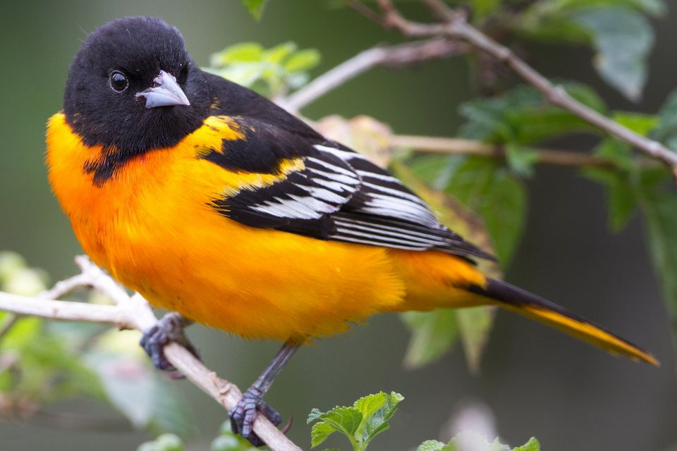

Maryland
One of the original 13 colonies, Maryland lies at the center of the Eastern Seaboard, amid the great commercial and
population complex that stretches from Maine to Virginia. Its small size belies the great diversity of its landscapes
and ways of life that they foster, from the low-lying and water-oriented Eastern Shore and Chesapeake Bay area, through
the metropolitan Baltimore, its largest city, to the forested Appalachian foothills and mountains of its western
reaches. Annapolis, the state capital, is also home to the United States Naval Academy. Maryland is the leading producer
of blue crabs and is renowned for its crab cakes.
| Date of Statehood |
Capital |
Population |
Size |
| April 28, 1788 |
Annapolis |
6.19 million |
12,407 square miles |
Motto
Fatti Maschii Parole Femine (“Strong Deeds, Gentle Words”)
Bird
Baltimore Oriole

Interesting facts
-
In April 1649, colonists voted into law An Act Concerning Religion (later known as the Maryland Toleration Act), which
granted freedom of worship for all Christians. Although permanently repealed in 1692, the act was one of the first
statutes granting religious liberty of any kind and was an important step toward true freedom of religion in the United
States.
-
In 1763, astronomer Charles Mason and surveyor Jeremiah Dixon were asked to resolve an 80-year land dispute between the
Calvert family of Maryland and the Penn family of Pennsylvania by marking the correct boundary. The resulting
Mason-Dixon Line took five years to complete and later became the demarcation between the free North and slave-holding
South.
-
On September 14, 1814, while witnessing the British bombard Fort McHenry in an attempt to capture Baltimore during the
War of 1812, Francis Scott Key wrote the lyrics to “The Star-Spangled Banner.” In 1931, the United States adopted the
song as its national anthem.
-
The Battle of Antietam in Sharpsburg on September 17, 1862, was the first attack on Union soil during the Civil War and
the bloodiest one-day battle in U.S. history with more than 23,000 soldiers killed. Although it ended in a draw,
President Abraham Lincoln used General Robert E. Lee’s retreat to Virginia as an opportunity to issue his preliminary
Emancipation Proclamation, warning seceded states to return to the Union before the end of the year or their slaves
would be declared free.